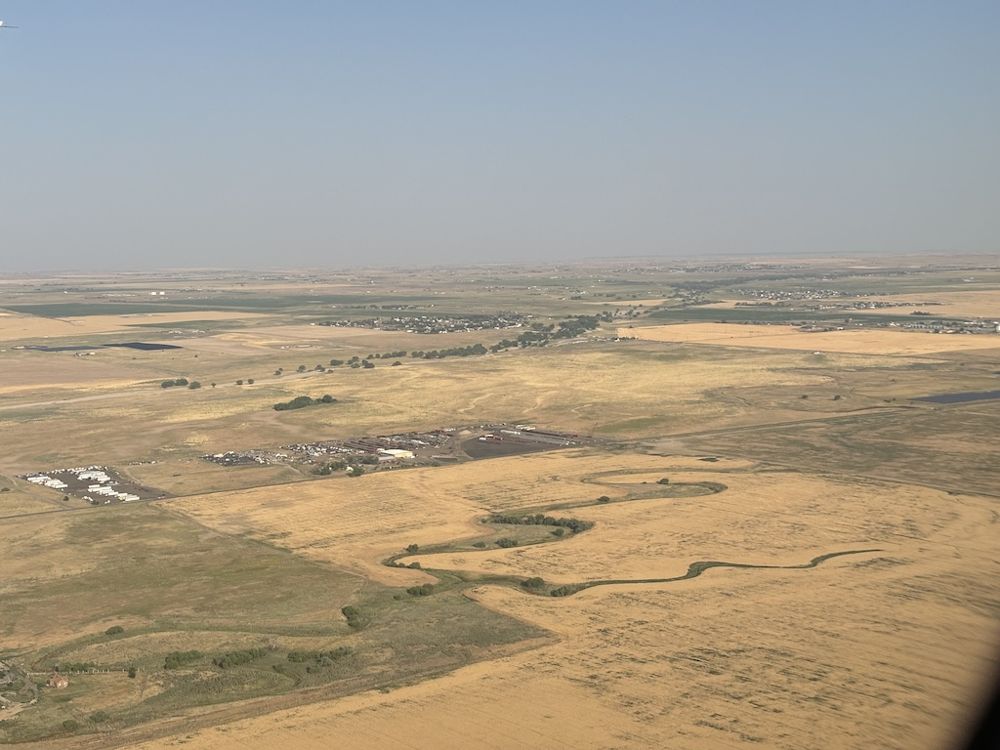

30th August 2024
Note that for privacy reasons the names in this article have been changed.
Aloha to you regular or irregular reader. We have officially left the mainland! Flying almost 6 hours into the Pacific ocean did feel a little unnerving, especially when Delta airlines give you a little graphic of where you are in the world. But excluding a fair bit of heavy turbulence I have arrived soundly in Hawaii. This update is of the first part of my trip to the Hawaiian Islands exploring the Big Island (originally Hawai'i island before the term was used to describe the whole cluster).
The Big Island has 2 main airports, one in Kona on the western side of the island and on in Hilo on the eastern side. After talking over the phone a family friend (Nico) was happy to let me stay with them while I visited. Booking my flights before I planned my accommodation did result in me landing on the wrong side of the island, so the first step after grabbing my checked bag was working out how to get to Hilo. I discovered when speaking with Nico that Hurricane Hone was en route to Hawaii, glancing quite close to the Big Island. This explains the freak turbulence as we came in to land, as well as the bus cancellations; the South part of the belt road around the island was closed due to flooding. Oh dear I thought, I have 75 miles to cover before sundown, somehow...
I checked Uber (which did operate here interestingly) - $250. I checked nearby hotels to stay at - $200 Nico was actually staying at his home in the worst of it in Pahala - I was travelling to a different place they had in Hilo just until the storm blew through. Things were looking either dire (sleep in the airport?) or expensive. I paced up and down the short road outside the airport and had a think
As a complete gamble I went up to a guy around my age with a Muse hat on and popped the question
"Hi mate, is there any chance you're heading to Hilo"
"Yeah, I am actually"
"Really?! Is there any chance I could get a lift there with you?"
"I mean, I'd have to ask my friends, they're picking me up in a minute. But I'm sure we could squeeze you in."
I couldn't believe my luck. The first person I speak to is going all the way to Hilo! It turns out he intended on flying into the airport in Hilo but due to the weather his flight was rearranged to Kona (after bouncing to 2 other Hawaiian islands!) I mention I'm from where Muse are from which help my first impression just as his friends arrived.
"Ah good to see you. Yeah, so this is Charlie and he needs a ride to Hilo. Can he come?" "Course, I'll open the trunk so you can put your bag in the back."
And just like that I was on my way. We all did our introductions in the car - the 2 picking us up were students of marine biology at the university in Hilo. My friend with the Muse hat just finished a degree in English, looking for a trip to help inspire him on what to write. I learnt on the way over of the many microcosms of climate Hawai'i has, Kona being the dryer and clearer side and Hilo being especially wet. This was confirmed as we drove north along the belt road, rain began pouring down and the whole view out the front completely fogged over for a good 20 miles.
 Navigate home
Navigate home